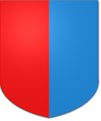

We can add a bit more interest to our shield by splitting the field into two parts and giving each part a different colour. There are quite a few ways to split the field into two; they are known as divisions and each of them has its own special name. Splitting the shield vertically down the middle is known as per pale. Divisions are always followed by the two colours, so we can already create a second complete blazon-
Per pale gules and azure
Which side gets which colour? There is a general rule of blazonry involved here - things are usually described left to right and top to bottom. So our blazon above describes a shield that is red (gules) on the left side and blue (azure) on the right.
Other common divisions of the field include per fess (split horizontally across the middle), per bend (split diagonally from top left to bottom right) and per chevron (split in an upside down 'V' shape).
{% include quickimage.html %}
There is a very helpful feature of blazonry - words are always used consistenly. For example we have seen that per pale means "split vertically". Wherever the word pale appears we can be sure that it always has something to with "vertical". For example, if some things are described as being in pale it means that they are stacked vertically. Similarly, whenever you see the word fess you will know that relates to something horizontal. Once you learn a term in blazonry you will know what it means wherever it is used!
Time for your first practical - try out a few combinations of divisions and colours in the box here. Remember the division comes first, followed by two colours. We have some divisions given above but here is a reminder of some of the colour names for you to experiment with:
sable (black), argent (silver, shown as white), or (gold, shown as yellow), and vert (green).
When you are ready, move on the next page, where we add some more shapes to our shield.